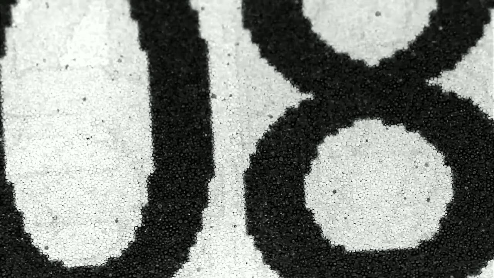

Il touch-screen ha rivoluzionato
l'interazione
uomo-computer,
rendendola più intuitiva
e immediata. Ha dato origine a nuovi orizzonti,
nuove opportunità e nuove occasioni alla società.
L'inizio
La storia dell'interfaccia touch affonda le proprie radici nell'industria musicale degli anni Quaranta, e in particolare nei primi sintetizzatori dotati di tasti sensibili al tocco. Ma il primo vero touch screen fu realizzato tra il 1965 e il 1967 nei laboratori del Royal Radar Establishment di Malvern, in Gran Bretagna, da E. A. Johnson, che descrisse la propria invenzione in un paio di articoli scientifici. Lo schermo tattile di Johnson utilizzava una tecnologia definita capacitiva, ancora molto diffusa negli schermi degli smartphone. In un primo momento tale tecnologia viene però eclissata da quella resistiva, scoperta dal professor G. Samuel Hurst nei laboratori di fisica atomica dell’Università del Kentucky all'inizio degli anni Settanta. Il professor Nimish Metha dell’Università di Toronto è invece il primo a teorizzare e realizzare schermi capacitivi multitouch, nel 1982. Un anno dopo l'azienda Hewlett-Packard mette in commercio il computer HP-150, il primo dispositivo commerciale a montare uno schermo tattile, mentre nel 1993 IBM e BellSouth presentano il primo telefono cellulare dotato di schermo touch screen, il Simon Personal Communicator.
La strada degli schermi tattili era ormai segnata.

Samuel Hurst - Schermo elografico - 1960
Il primo telefono touch
È stato presentato al Comdex di Las Vegas nel novembre 1992: aveva lo schermo touch e pesava poco più di 500 grammi. E il nome? Viene da un popolare gioco americano. Nel novembre del 1992 la Ibm presentava al mondo Simon durante il Comdex di Las Vegas. No, non era il nuovo amministratore delegato, ma quello che ancora oggi è considerato il primo smartphone della storia: Ibm Simon Personal Communicator. All'epoca questo termine non era ancora utilizzato, ma sta di fatto che Simon era in grado di inviare e ricevere email e fax, aveva una rubrica di contatti, aveva la calcolatrice, il blocco note e addirittura un gioco già impostato. Oltre, ovviamente, a fare e ricevere telefonate.

IBM Simon personal communicator - 1992
La commercializzazione è iniziata però nel 1994 grazie all'azienda statunitense BellSouth (oggi AT&T) con un prezzo di lancio di 900 dollari. A sei mesi dal suo debutto ne furono vendute 50mila unità. Nel tempo il costo è leggermente diminuito fino ad arrivare a circa 600 dollari. Perché si chiamava Simon? Il nome si deve a «Simon says» (Simon dice), un gioco per bambini notissimo negli Stati Uniti in cui uno dei partecipanti deve ricoprire i panni di Simon dando degli ordini agli altri. Tutti i giocatori sono tenuti a seguire le sue indicazioni se la frase è preceduta da «Simon says», mentre non devono fare nulla se l'ordine viene impartito senza l'incipit che dà il titolo al gioco.
Ulteriori imput
Multi-touch
La tecnologia multitouch consente al touch screen di rilevare e interpretare più di un tocco simultaneo. Questa tecnologia ha rivoluzionato l'interazione con i dispositivi touch screen, consentendo agli utenti di utilizzare più di un dito per eseguire operazioni come lo zoom, la rotazione e la selezione. Il multitouch ha aperto la strada a nuove forme di interazione, come la rilevazione di gesti, che consente di controllare l'interfaccia utente attraverso movimenti delle mani. Il multitouch è oggi una tecnologia comune in dispositivi come smartphone, tablet, monitor interattivi e schermi di automobili.
Force-touch
L'evoluzione del multitouch ha portato anche all'introduzione di tecnologie come la "force touch", che consente di rilevare la pressione sullo schermo e di fornire un feedback aptico. Inoltre, il multitouch ha anche contribuito a creare nuovi tipi di applicazioni, come giochi e strumenti di disegno, che sfruttano le possibilità offerte dalla rilevazione simultanea di più tocchi.
Feedback aptico
Il feedback aptico è una tecnologia che consente ai dispositivi di comunicare con l'utente attraverso il senso del tatto. Questo tipo di feedback viene generato da motori lineari, vibrazioni o impulsi elettrici, che producono una sensazione tattile sul dispositivo. Il feedback aptico può migliorare l'esperienza dell'utente in molte situazioni, come ad esempio nella digitazione su uno smartphone o nella guida di un'auto. Inoltre, può essere utilizzato per fornire indicazioni di navigazione e feedback su giochi e applicazioni. Alcuni dispositivi utilizzano il feedback aptico per creare una risposta tattile realistica, come ad esempio negli joystick dei controller per videogiochi o nei controller per droni. Il feedback aptico può essere personalizzato per l'utente e può essere regolato in base all'intensità, alla frequenza e alla durata delle vibrazioni.
Alcuni problemi
Il mondo del touch screen è stato caratterizzato da una serie di innovazioni tecnologiche nel corso degli anni, ma non tutte hanno avuto successo. Diverse tecnologie correlate al touch screen sono state introdotte con grande entusiasmo, solo per fallire in seguito a causa di problemi di usabilità, costi elevati o semplicemente perché non erano in grado di competere con le soluzioni più avanzate.
Ad esempio, il touch screen resistivo a quattro fili, comunemente utilizzato nei primi dispositivi touch screen, ha presentato problemi di usura e di diminuzione della sensibilità dopo un uso prolungato.
Anche il touch screen a ultrasuoni, che utilizza onde sonore per rilevare i tocchi, non ha avuto successo a causa dei costi elevati e della difficoltà di implementazione su larga scala.
Anche il touch screen ottico, che utilizza una fotocamera per rilevare i tocchi, è stato considerato promettente ma è risultato poco pratico e costoso da implementare.
Infine, il touch screen capacitivo con pennino, che utilizza un pennino dedicato per rilevare i tocchi, è stato utilizzato in alcuni dispositivi ma ha presentato problemi di usabilità e di perdita del pennino stesso.
In generale, il touch screen capacitivo a dita è emerso come la soluzione più avanzata e affidabile, con una maggiore sensibilità, precisione e facilità d'uso. Tuttavia, è importante notare che le tecnologie correlate al touch screen continuano ad evolversi, e ci sono sempre nuove innovazioni in arrivo che potrebbero cambiare il panorama delle tecnologie touch screen in futuro.
Tecnologia E-ink
La tecnologia E-ink, o inchiostro elettronico, è stata sviluppata per fornire un'esperienza di lettura digitale simile a quella della carta stampata. La tecnologia utilizza particelle di inchiostro bianco e nero che possono essere disposte in modo da creare caratteri e immagini. Il risultato è un'immagine di alta qualità e ad alta definizione che può essere visualizzata anche sotto la luce solare diretta, senza affaticare gli occhi dell'utente. L'uso principale della tecnologia E-ink è la creazione di schermi per dispositivi di lettura digitale come il Kindle di Amazon, il Kobo e altri lettori di ebook. Questi dispositivi utilizzano la tecnologia E-ink per visualizzare il testo dei libri digitali in modo che sembri stampato su carta, con una resa del colore in bianco e nero.
Joseph Jacobson - Zoom su uno schermo "E-Ink" - 1996
L'effetto visivo è molto simile alla carta stampata, ma con la capacità di contenere migliaia di libri in un singolo dispositivo portatile.
La tecnologia E-ink ha anche trovato applicazioni in altri settori, come la segnaletica digitale e le etichette intelligenti. L'efficienza energetica della tecnologia E-ink la rende un'opzione ideale per queste applicazioni, in quanto richiede poca energia per funzionare e può essere alimentata da batterie a lunga durata.
Inoltre, la tecnologia E-ink è ecologica poiché richiede meno energia per funzionare rispetto ai display tradizionali. Non produce radiazioni nocive come quelli degli schermi tradizionali, riducendo così l'affaticamento degli occhi degli utenti.
In sintesi, la tecnologia E-ink è una tecnologia innovativa che ha rivoluzionato il modo in cui le persone leggono e interagiscono con i contenuti digitali. Grazie alla sua capacità di fornire un'esperienza di lettura simile a quella della carta stampata, ma con la portabilità e la convenienza dei dispositivi digitali, la tecnologia E-ink è destinata a continuare a crescere e ad evolversi in molteplici settori dell'industria tecnologica.